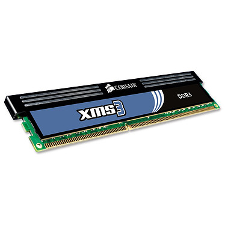
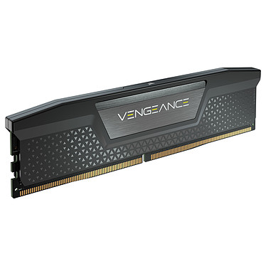

L'amélioration de la RAM entre 2000 et 2021
Cette page a un but explicatif, pour montrer comment la mémoire RAM a pu être améliorée sur les dernières années années.
la RAM ou mémoire vive en français est un composant de l'ordinateur dans laquelle peuvent être enregistrées les informations traitées par ce dernier, stockées sous le format binaire.
Afin d'illustrer des exemples concrets, j'utiliserai la marque Corsair.
| La mémoire vive de chez Corsair | |
|---|---|
| Ancienne génération | Nouvelle génération |
|  Corsair XMS3 2 Go DDR3 2000 |  Corsair Vengeance DDR5 64 Go |
|
Les caractéristiques : Capacité : 2Go Fréquence : 2000Mhz |
Les caractéristiques : Capacité : 32Go Fréquence : 5200Mhz |
|
En conclusion : Nous pouvons constater deux choses sur la RAM chez Corsair :
|
|